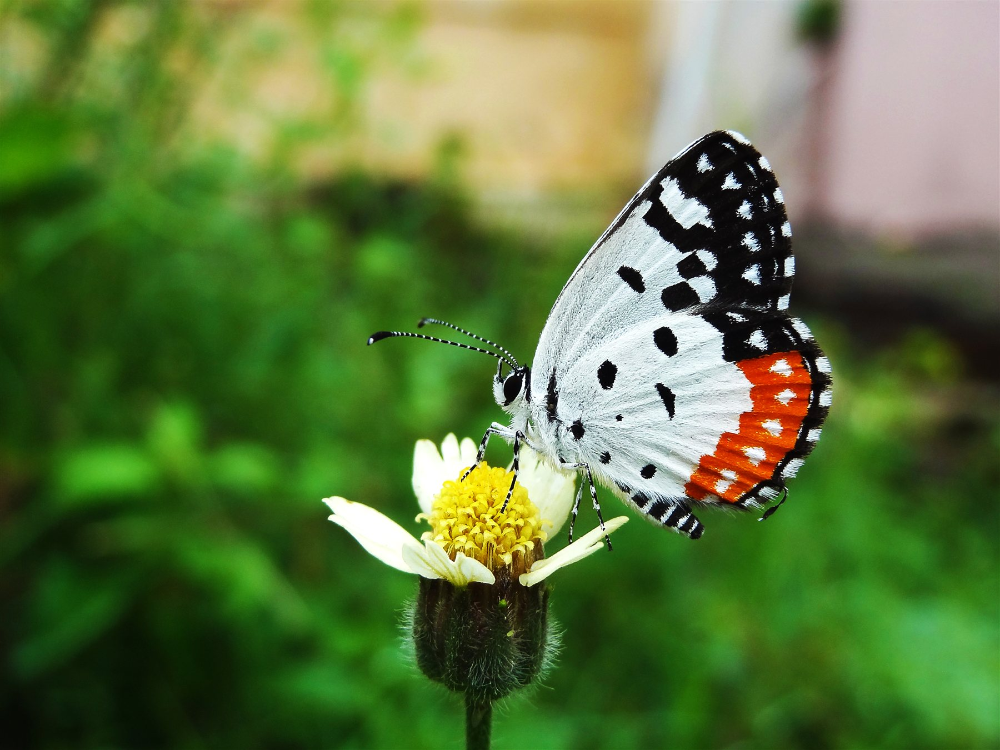

People & places
AI and forecasting for the changing rhythms of cities and events.
Explore research ↗I’m Theivaprakasham Hari, a researcher, naturalist and lifelong observer. From crowd forecasting to butterfly fieldwork, I enjoy finding patterns and building things that make the world a little easier to understand.

My work brings together research, technology, nature and a love of looking more closely.
AI and forecasting for the changing rhythms of cities and events.
Explore research ↗From Butterfly Vision to scientific software and computer vision.
See projects ↗Photography, birdwatching, butterflies and astronomy.
Explore interests ↗
My fascination with nature led me to years of butterfly observation, community surveys and photography. It also inspired tools that help others identify and appreciate wildlife.